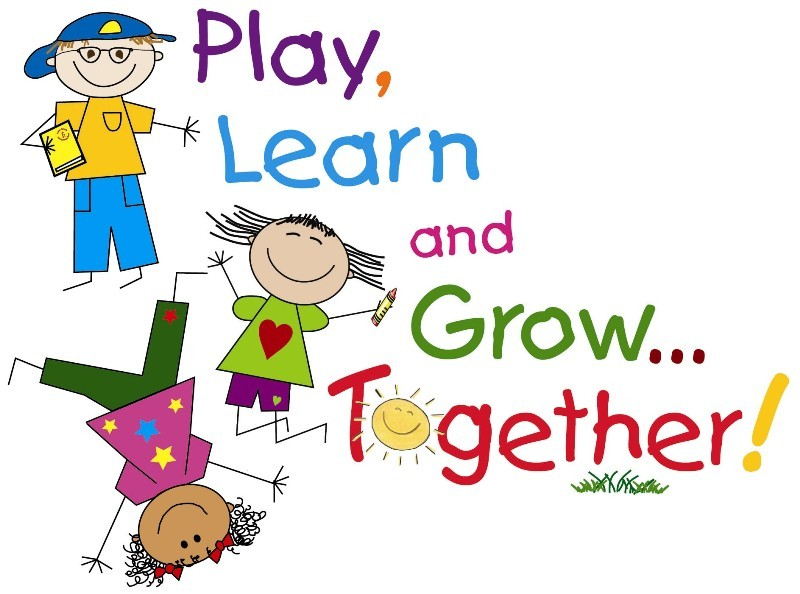
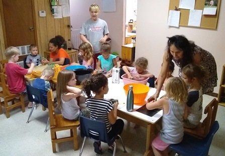
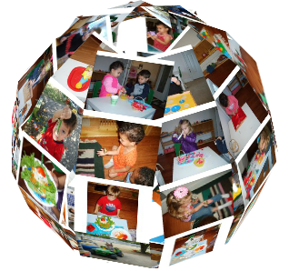

Smart Steps Montessori ensures dedicated care, love and attention for every child. We cultivate a love of learning through hands-on Montessori materials, in a co-operative community of learners.

Montessori materials present every concept in a creative, concrete form. Children learn to be responsible and respectful by practicing manners in everyday activities, while building skills in reading, writing, math, science, culture, and the arts — along with grace and courtesy.
Ensure that your child benefits from a genuine Montessori environment. Explore the site to learn more about our approach to child development.

Every classroom is prepared with authentic Montessori materials for math, language, sensorial, and practical life work.
A 1:7 teacher-to-child ratio keeps guidance personal, so every child is seen and understood.
Montessori curriculum is coupled with music, plus a large outdoor play area for gardening, exploring, and large motor play.
A fully balanced academic, social, and cultural environment carries children through the whole day.
Two nutritious snacks are served daily for full-day students, with one for half-day students.
Multi-age classrooms let younger children learn by observation, and older children deepen their understanding by teaching.

In addition to having advocated for early childhood Montessori education, we raised our own three children in a Montessori environment — and witnessed the results through adulthood, in their lasting love of learning.
Tours are the best way to feel what a Montessori day is really like. Book a time that works for your family.